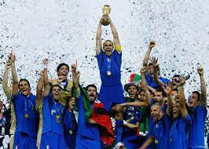
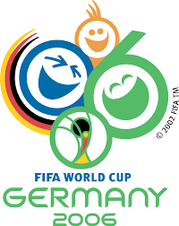

מונדיאל 2006
מארחת: גרמניה
תקופת התחרות: 9 ביוני 2006 – 9 ביולי 2006 (4 שבועות ו־3 ימים)
מספר משתתפות: 32
 הזוכה: איטליה
מספר משחקים: 64
מלך השערים: מירוסלב קלוזה
השחקן המצטיין: זינדין זידאן
מונדיאל 2006 (או בשמו הרשמי: גביע העולם של פיפ"א - גרמניה 2006) נערך בין ה-9 ביוני ל-9 ביולי 2006, והסתיים בניצחונה של איטליה על צרפת בדו-קרב פנדלים 3-5, לאחר שמשחק הגמר הסתיים בתיקו 1-1.
הייתה זו הפעם השנייה שגרמניה אירחה את המונדיאל, לאחר שמערב גרמניה אירחה אותו ב-1974, אך בשונה ממנו, נערך על אדמת גרמניה המאוחדת.
בחירת גרמניה כמארחת הטורניר
ביוני 2000 נערכה ההצבעה אשר קבעה את זהות המדינה המארחת את מונדיאל 2006. מועמדותה של גרמניה גברה על המועמדויות של ברזיל, אנגליה, מרוקו ודרום אפריקה, אשר הייתה המועמדת הבכירה לזכייה באירוח הטורניר. ההחלטה נפלה על חודו של קול, כש-12 הצביעו לזכותה של גרמניה ו-11 לזכותה של דרום אפריקה. נציגה של ניו זילנד בוועד הפועל של פיפ"א בחר להימנע מהצבעה בניגוד להחלטתה של קונפדרציית הכדורגל של אוקיאניה (OFC) להצביע לזכותה של דרום אפריקה. אילו היה מצביע לטובת דרום אפריקה, קולו של נשיא פיפ"א ספ בלאטר היה מכריע לטובתה.

לאחר ההכרזה על גרמניה כמארחת, פיפ"א החליטה לבצע רוטציה בין היבשות ולהעניק לאפריקה את זכות האירוח של מונדיאל 2010.
גמר מונדיאל 2006
גמר מונדיאל 2006 התקיים באצטדיון האולימפי, ברלין, גרמניה ב-9 ביולי 2006, ובו נקבע שאלופת העולם לשנת 2006 היא נבחרת איטליה, שניצחה את נבחרת צרפת, בתוצאה 3-5 בדו-קרב בעיטות עונשין, לאחר שוויון 1-1 בתום ההארכה. זו הייתה הזכייה הרביעית של איטליה בגביע העולם.
היה זה משחק הפרישה מכדורגל של קפטן נבחרת צרפת, זינדין זידאן. בדקה ה-110 זידאן הורחק בכרטיס אדום לאחר שנגח בחזהו של בלם איטליה, מרקו מטראצי, בעקבות טראש טוק מצידו של האיטלקי. הייתה זו ההרחקה השנייה (והראשונה שמתרחשת בהארכה) בהיסטוריית משחקי הגמר. בנוסף, זידאן הצטרף לריגוברט סונג מקמרון, והפך לאחד משני שחקנים בלבד שהורחקו בשני טורנירי מונדיאל שונים.
משחק זה היה משחק הגמר השני בהיסטוריה שהוכרע בדו-קרב בעיטות עונשין, כשבראשון הפסידה איטליה לברזיל בגמר מונדיאל 1994. יתרה מכך, הייתה זו הפעם הראשונה בה איטליה מנצחת דו-קרב בעיטות עונשין, לאחר שהפסידה בשלושת ניסיונותיה הקודמים, כולל אותו משחק גמר. היה זה מפגש הגמר הראשון בין נבחרות איטליה וצרפת, והגמר הראשון מאז גמר מונדיאל 1982 בין איטליה וגרמניה המערבית אליו מגיעות שתי נבחרות מאירופה. בפעם הראשונה מאז גמר מונדיאל 1978, ובפעם השנייה בלבד מאז גמר מונדיאל 1938, נערך משחק גמר מונדיאל שלא כולל את ברזיל או גרמניה.
לאיטליה הייתה זו הופעה שישית בגמר המונדיאל. היא ניצחה בשלושה (1934, 1938, 1982) והפסידה פעמיים (1970, 1994). לנבחרת צרפת הייתה זו הופעה שנייה בגמר, לאחר ניצחונה על ברזיל בגמר מונדיאל 1998 שנערך בביתה.